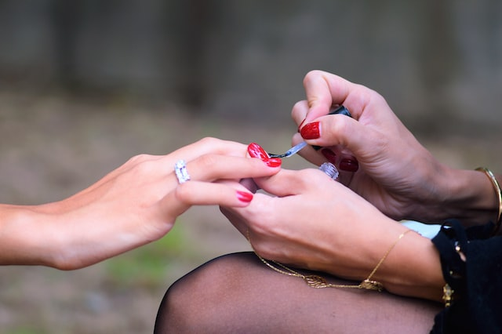

Pasos a seguir:
- Prepara tus uñas: Empieza por retirar cualquier esmalte o residuo previo. Luego, lima y da forma a tus uñas según tu preferencia. Lava tus manos para eliminar cualquier residuo.
- Empuja las cutículas: Usa un palito de naranjo para empujar las cutículas hacia atrás y así poder exponer toda la superficie de la uña. Esto te ayudará a obtener una aplicación uniforme.
- Aplica una capa de base coat: El base coat es fundamental para proteger las uñas de la pigmentación del gelish. Aplícalo en una capa fina, evitando las cutículas y los bordes de las uñas.
- Seca la primera capa: Usa la lámpara UV o LED que viene con el kit de gelish para secar la capa base. La mayoría de las lámparas toman unos 30 segundos en hacerlo.
- Aplica una capa de gelish: Usa el tono de gelish que desees y aplícalo en una capa fina, evitando las cutículas y los bordes de las uñas.
- Seca la primera capa de gelish: Usa la lámpara UV o LED nuevamente para secar la capa de gelish. Una vez más, esto suele tomar alrededor de 30 segundos.
- Aplica una segunda capa de gelish: Para lograr una cobertura completa, aplica una segunda capa del tono de gelish que has elegido. Asegúrate de cubrir toda la uña.
- Seca la segunda capa de gelish: Usa la lámpara UV o LED nuevamente para secar la segunda capa de gelish.
- Aplica una capa superior: La capa superior es fundamental para proteger el color y darle brillo a las uñas. Aplícala en una capa fina, evitando las cutículas y los bordes de las uñas.
- Seca la capa superior: Usa la lámpara UV o LED nuevamente para secar la capa superior. Esto toma aproximadamente 30 segundos.
- Limpia las uñas: Usa un poco de alcohol isopropílico en un paño de algodón para limpiar cualquier residuo pegajoso de las uñas.
¡Y eso es todo! Ahora deberías tener unas uñas hermosas con un acabado brillante y duradero.